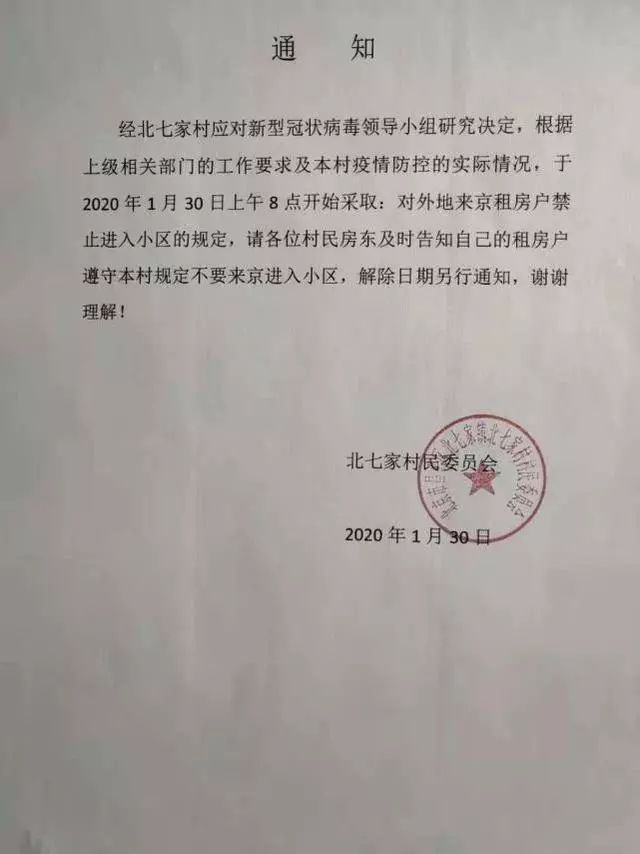
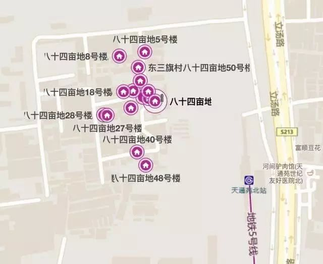

返程大潮迫近，北京绷紧神经
原文链接 备份链接 壹 下午五点左右，北京地铁宋家庄站内看不到多少人。我穿过闸机，搭上一趟刚进站的列车，整节车厢里除了一位身着制服的工作人员，没有其他乘客。 这天是大年初二。因为担心城际高铁暂停和高速封路，我急匆匆从天津返回北京。街道 …

在法律界人士看来，各地自行采取的“封村”、“封小区”等极端做法涉嫌违法。防控疫情需要全国一盘棋，而不是“各扫门前雪”

这家小区加强登记筛查但未将租客拒之门外
文 |《财经》记者 王博 周源 陈潇潇 马霖 王凤 杨立赟 吴琼
编辑 | 余乐
租住在北京北七家镇东三旗村的王小山（化名）原计划初九坐火车回京，但现在他却担心回到北京也进不了家门。
王小山是山西临汾人，在北京打工五年多。一年前，王小山在东三旗村84亩地租了个一居室，月租金1500左右。东三旗村84亩地紧邻地铁5号线天通苑北站，有多栋两层小楼，每栋楼能容纳20余住户，当地村民多用来出租。
1月30日，北京市昌平区北七家镇北七家村村委会发布通知，宣布从当天开始禁止外地来京租户进入小区。北七家镇的其他社区也都采取了类似措施。房东给王小山打电话，告诉他“疫情结束之前不要回来”。
春节假期临近尾声，尽管各级政府纷纷出台延长假期、推迟返工时间的政策，但已经有越来越多人开始准备从老家返回北上广等城市。对于这些城市来说，如何避免外地返回人员带来的疫情确实是一大严峻考验，但简单粗暴地将这些人拒之门外，让他们无家可归，是否真的能对防控疫情起到积极作用？居委会、物业等机构禁止居民回家，又是否有足够的法理依据？
“封村”、“封小区”，各地“土办法”频出

类似北七家镇的封闭措施影响了相当多的人。叶亮（化名）是王小山所在公司的创始人兼CEO，其公司共有员工20余人，包括叶亮本人在内都是外地人（但无一湖北籍），也都回家过年了。叶亮说，现在公司有四名外地员工恐无法按时回京。因为他们租的是“村里的房子”，其房东拒绝他们回来，除非手里有“14天在京安全证明”。其它外地员工租住的是正规小区，目前还不存在“有家不能回”的情况。

北京昌平区东三旗村84亩地概览 来源：百度地图
面对有家不能回的状况，王小山并没有愤怒，“也不是房东的意思，是村委会的决定。”王小山对《财经》记者说。至于期间的租金如何计算，他也表示暂时还没有考虑。
王小山承认，之所以没有愤怒的另一个原因是，他所在公司目前允许其延期返京。
叶亮表示，虽然略有焦虑，但他也只能允许这四名员工延迟返京，“我想最多一个月（这种状况）也会结束了吧。”叶亮说。
但当记者问如果超出一个月会怎么样时，叶亮和王小山都觉得为难起来。
西湖新村小区同属北七家镇，这里的业主于洋（化名）1月29日从老家湖南顺利返京回到家中，但是，一些第二天从外地返京的邻居就没这么幸运了。
“初五回来还让进小区，初六就封了，不只是租户，很多从外地返京的业主也进不来。”于洋说。1月30日，西湖新村小区群中物业发布通知：接北七家镇政府通知，为防止疫情进一步扩散，西湖新村小区已经封闭，外地返京人员不得进入。
1月31日，《财经》记者致电西湖新村小区物业及居委会确认了这一消息。物业工作人员表示，物业没权力禁止住户回京，但无论是租户还是业主，现在回京都不能进小区，需要在外自行隔离14天，此后还需要到医院检查，提供相关健康证明，以及返京的行程轨迹。
《财经》记者采访发现，北京市朝阳区大屯路附近几个小区也采取了此种封闭手段。一位业主表示，进出大屯路几个小区，目前都需要携带身份证和房产证，也就是说，只有小区业主可以正常出入，租房的人员已经禁止返回，需要自行隔离14天，并且出示有效健康证明才可以正常进入。
还有一些社区也采取了一定程度的封闭措施，但相对来说没有那么极端。王先生是北京市海淀区图景嘉园的租户，春节前返回老家过年，计划近期回北京上班。在网上看到图景嘉园等小区阻止外地返京人员进入的消息后，他在1月31日上午打电话联系了小区物业。物业告诉他，今天早上刚刚接到指示，除了湖北籍以外，其他地区的返京人员是可以进小区的，但是要填登记表并签署承诺书。承诺书内容包括在家隔离14天，除了采买生活用品以外，不许出家门，另外每天需要测两次体温。物业还强调，如果不遵守以上条款，村委会将报警把人请出小区。
通州的邓家窑西富河园小区也禁止返京湖北人进入，但邓家窑村委会征用了西富河园门口的一家尚客优酒店，让湖北返京人员先在酒店隔离两周。邓家窑村委会相关负责人表示，具体怎么安置返京人员上面没有具体安排，是村委会开会决定的。“我们不让人家回家，得给人家找好住的地方，在隔离期间，被隔离居民的食品、生活用品我们都负责。”据了解，邓家窑村委会已共计拿出了约30万元，租用了55间客房。
丰台区兆丰馨园小区居民黄先生称，1月28日小区物业对所有住户发放了门禁卡，这两天开始出入小区需要门禁卡，无卡者就说明1月28日不在小区，会被委婉劝离小区，先自行隔离。
其他城市也有采取封闭措施的社区。截至1月31日，在全国第二大疫区浙江，已有537人确诊，面对即将到来的返程高峰，也有小区发出通告要求房东和租客自查，元宵节之后才能回家。
在阿里巴巴总部旁边的余杭区五常街道文一社区，居委会1月29日发出紧急通知，称外来返杭人员一律在正月十六（2月9日）24时以后才能进入小区；湖北籍人员返杭的具体时间等上级部门通知，方可租住西溪北苑和周家斗农居点。如果不按此要求执行而产生的一切管控和隔离所产生的费用将由出租户（房东）自行承担。
租住在杭州萧山区湖头陈花苑的陈小姐，在杭州一家电商公司上班，2月初就要复工，但她现在仍在宁波家中无法启程。小区物业通知她，接到社区通知，租客正月十七（2月10日）以后才能进门。
“社区防控最根本的目的是保障人民健康安全”
北七家镇等地的“封村”做法在网上引起了争议。很多网友认为这种措施过于严厉，还有很多人认为其有违法嫌疑。依据规定，北京是2月3日复工，因此马上将会迎来返程高峰，有业内人士担心，如果延续这种一刀切的办法，相关的问题会越来越严重。
朝阳区垈头翠城馨园一名业主表示，她觉得严格禁止外来务工者回到北京居所的行为，是一种比较极端的方式，她和自己所在的社区居委会沟通过，目前自己的小区还没有限制返京人员，正常登记、做好自我隔离或防护即可。
一位居住在北京常营像素北区的租户老家在吉林，因为工作原因过年期间并没有离开北京，和他同租一套房子的另有两位租户，分别来自浙江和江西，截至1月30日24时，浙江有确诊病例537例，江西240例。他表示，两位邻居过年都回了老家，此时还未返京。他说自己心里会默默祈祷，希望邻居可以等疫情缓和一些再回来，但也觉得没有理由拒绝他们返京。
对于管控措施是否涉嫌违法的问题，北七家镇西湖新村小区工作人员并没正面回复。“居委会一直在进行劝阻，为了小区的安全大家配合一下，附近小区已经出现外来返乡人员出现状况被隔离了，我们没说不让你回。必须回、有必要回的情况下，让单位安排食宿。”
于洋和很多返京的业主都在找居委会协调物业，“女儿和老公过几天就返京了，也担心他们不能进小区。”
针对有小区禁止返京租户回家的情况，北京市中闻律师事务所合伙人赵虎律师对《财经》记者表示，相关小区物业的做法并没有法律依据。依照我国传染病防治法第42条，禁止居民回到家中等行为，需要县级以上人民政府的同意和批示。居委会和街道办同样没有这个权力。
另据传染病防治法的规定，即使有特殊情况，需对某个地域进行隔离，在隔离期间，也不能区分对象是业主还是租户。如果该地区不能居住，不能单独对租户做出隔离要求，这属于侵犯租户的权利。
赵虎认为，小区禁止租户回家，涉及的是行政单位是否有权力提出这样要求的问题，如果没有，小区行为属于违法。
他建议，如果返京租户遇到类似情况，可以向有关单位，比如居委会、街道办甚至更上一级反应问题并要求解决。租户有权利要求执行单位拿出相关文件和通知。如果有证据证明谁做出这个决定，租户可以保存证据，提起诉讼。
北京市一法律师事务所律师周兆成也对《财经》记者表示，物业基于业主授权和《物业服务合同》对小区进行管理；而一些城市的居民委员会、村民委员会则基于有关法律以及社会公共利益对所在区域进行管理。但是，任何管理都不能够采取地域歧视的方式。因为这既不尊重人权，也涉嫌违法，与我国《宪法》规定的平等权相背离。
“小区物业或者居委会、村委会对于在本小区合法居住的住户，不考虑是否是从疫区回来的，也不提前通知，测量体温，直接一刀切的不让回家。我认为涉嫌侵权、歧视、违法，应该立即叫停。”周兆成说。
周兆成表示，对于物业不让进入小区的情况，合法租户可以依法与所在小区物业进行沟通、交涉。而对于承租人如果合法租住该小区，也可以向出租人寻求帮助。出租人基于租赁合同也有义务要保证租户入住，如不能则有义务为承租人提供临时住处。
实际上，自如等长租公寓机构已经在采取行动维护租户的权益。自如相关负责人回复《财经》称，租户无法回家的情况目前为个例，自如正在努力跟进，有的已解决，如图景嘉园已解禁，今日租客已陆续回到租住房屋。
据《财经》了解，自如目前全国在住的租客有100多万，北京约占一半。出现这种情况，对租客，和长租公寓运营商都是损失。目前北京市个人房东在租赁市场中占比为70-80%，相对于长租公寓的租客来说，个人租户的维权难度恐怕会更大。
除了法律问题之外，一刀切的“封村”、“封小区”做法是否能对疫情防控起到积极作用也存在疑问。无论是封闭还是隔离，各种防控措施的目的都是减少人群的接触和聚集，从而阻断病毒传播的渠道。但是，如果居民不能进小区，有家不能回，就只能在外面游荡。对于他们自己和其他人来说，这种情况都只能使疫情传播的风险增大，而不是减小。防控疫情需要的是全国一盘棋，而不是“各扫门前雪”。
1月31日，北京市宣布，除必需行业外，各企业上班时间延迟至2月10日。北京市民政局副局长赵济贵在谈到各个社区采取的防控措施时指出，“有一些社区在执行过程中太严格了，对于这种现象我们会及时劝阻，让其改正。不能造成恐慌，或者带来无形的压力。”他还表示，社区防控最根本的目的是保障人民健康安全，大家的相互支持是打赢这场防疫战的群众基础。
“我们要防控病毒，不是要防控来自各地的同胞。小区物业这种以返城人员为敌的做法，早已涉嫌违法，也绝不是管控和切断传染所必须的手段。”周兆成律师说。
新型冠状病毒疫情系列报道

▷ 点击图片查看
责编 | 黄端 duanhuang@caijing.com.cn
本文为《财经》杂志原创文章，未经授权不得转载或建立镜像。如需转载，请在文末留言申请并获取授权。
原文链接 备份链接 壹 下午五点左右，北京地铁宋家庄站内看不到多少人。我穿过闸机，搭上一趟刚进站的列车，整节车厢里除了一位身着制服的工作人员，没有其他乘客。 这天是大年初二。因为担心城际高铁暂停和高速封路，我急匆匆从天津返回北京。街道 …
原文链接 备份链接 湖北是我的老家，杭州是我的家 口述/阿基米 从湖北回到杭州，我们一家三口开始14天的隔离生活。 本以为可能遭遇到歧视，结果—— 社区说：“我们会保证您的隐私，谢谢您的配合。” 物业说：“您受委屈了，谢谢您的理解。” 这 …
原文链接 备份链接 《战疫口述记》，是燃财经在新型冠状病毒肺炎期间推出的特别栏目，记录疫情亲历者的观察和感受。本文为第4篇，查看前3篇请点击《我的“流浪”春节》《农村这样防肺炎》《我在武汉战肺炎》。 作者 | …
原文链接 备份链接 2003年上海仅有8人感染SARS，而本次疫情短短10天已有101人确诊。17年前的经验，这回还有没有用？ 上海的疫情防控有三张网：道口和口岸；发热门诊跟预检分诊；社区。 医生、警察、居民三人小组对所有湖北返沪人 …
原文链接 备份链接 *************▲************* 四川省巴中市巴州区，一辆鄂A车牌（武汉）轿车的车窗上，贴着红岩社区加盖公章的证明，称车主无感冒发烧现象，且正在家自行隔离。 （杜茂林/图） 全文共*4201*字， …